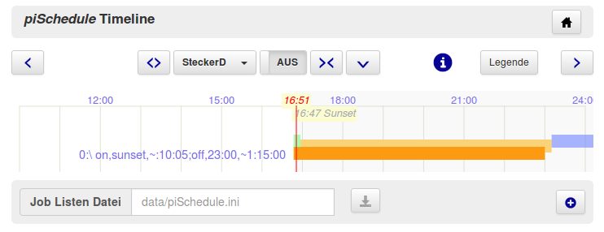
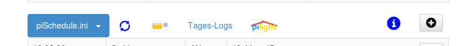

Actual Day Plan as a Timeline vers.0.7.5 2016-02-22_19

*** Sorry, translation not completed at the moment. ***

Timeline is an alternative method to show,add and change the jobs -- the ON/OFF switching time and also the random offsets -- for a selected device.
Handling and Functions
Timeline supports
- die Darstellung aller Job Definitionen eines Gerätes als Balkendiagramm
- der dargestellte Zeitbereich ist definiert durch Startparameter; 'prefs' Aufrufe auf der Browser Seite zum Ändern stehen zur Verfügung:
/startTime?hh:mmund/endTime?hh:mm - Tasten für Timeline Zoom In/Out, Verschieben, Rücksetzen, Geräteauswahl durch Menü
- ein Umschalter zeigt den aktuellen Geräte Status an, damit ist auch direktes EIN/AUS Schalten des ausgewählten Gerätes möglich
- ein roter Cursor zeigt die aktuelle Zeit des letzten Aufrufes bzw. Bedienung
- ein blauer Cursor dient als Pointer; Einschalten durch anklicken, er kann dann auf eine andere Position gezogen werden
- Taste [Legende] änderte die Position der Legende der Jobdefinitionen bzw. schaltet sie aus
- Klick auf die Kopfzeile führt zurück auf die vorherige Seite
Job-Balken - Darstellung und Funktionen
Für alle Geräte in der gewählten INI Datei lassen sich die definierten Jobs grafisch als Balken darstellen, wobei das jeweilige Gerät mit einem Menü ausgewählt wird.
Für die Balken gilt:
- eine Balkengruppe zeigt jeweils einen definierten EIN/AUS Schaltvorgang und ggf. die Zufallswerte an mit:
- gelber Balken: EIN bis AUS Zeitpunkt
- grüner Balken: Zufallszeit/Zeitverschiebung zum Einschalten
- blauer Balken: Zufallszeit/Zeitverschiebung zum Ausschalten
- gelber Punkt: Zeitpunkt des Einschaltens, keine AUS Zeit definitiert
- schwarzer Punkt: Zeitpunkt des Ausschaltens, keine EIN Zeit definitiert
-
Balken antippen/auswählen zeigt die EIN/AUS Zeiten als Cursor mit Zeiten
--> Verschieben der EIN/AUS Zeiten mit Cursor/am Bildschirm und ändern dieser Job Zeiten
--> Cursor/Funktionen ebenfalls für Zufallszeiten -
Die 'Legenden' an den Balken können mit dem Cursor angewählt werden. Dabei öffnet sich eine Textbox, die den Job anzeigt. Hier ist ebenfalls eine Änderung des Jobs möglich.
Dies versteht sich als "Experten" Modus ... Achtung:
Fehlerhafte Syntax wird im Moment nicht abgefangen!
Speichern der Änderungen
Die Elementegruppe unter der Timeline Anzeige gestattet die Änderungen in der angegebenen Job Datei (INI Datei) zu speichern. Aktiviert werden die Änderungen durch erneutes Laden auf der Seite "Aktueller Tagesplan".
Timeline Aufruf
Auf der Seite "piSchedule -- Aktueller Tagesplan" erscheint ein neuer Menüpunkt zum Öffnen von Timeline

Setup
Die Timeline Funktionen werden mit der Verion 0.7.5 automatisch geladen. Für das Setup siehe hier: (Beschreibung des Setups)
Timeline Diskussion --> piSchedule Forum
piSchedule Timeline befindet sich in der Entwicklung, kann aber auch bereits im Alltagseinsatz verwendet werden.Rückmeldungen bzgl. Funktionalität, Form, Farben etc gerne über das piSchedule Forum.
Dies ist am besten erreichbar aus dem laufenden piSchedule auf der Seite "/home" unter dem Menüpunkt [Hilfe] --> [Über piSchedule] und dort [Neuer Forumsbeitrag]
Ein direkter Weg ist auch -- allerdings ohne Installationsdetails -- https://groups.google.com/forum/#!forum/piSchedule7
Bekannte Probleme der Timeline Version 0.7.5
- ist die Bildschirmanzeige normal über den Browser gezoomt, ermittelt der blaue Cursor falsche Positionen/Zeiten
- die piSchedule Timeline Anzeige skaliert nicht mit Ändern der Größe des Browserfensters, ein Neuladen der Seite ist erforderlich. Gilt auch für das Drehen eines mobilen Gerätes.